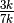
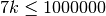
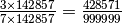
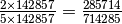

Ordered fractions¶
Problem 71
Consider the fraction, n/d, where n and d are positive integers. If n<d and HCF(n,d)=1, it is called a reduced proper fraction.
If we list the set of reduced proper fractions for d ≤ 8 in ascending order of size, we get:
1/8, 1/7, 1/6, 1/5, 1/4, 2/7, 1/3, 3/8, 2/5, 3/7, 1/2, 4/7, 3/5, 5/8, 2/3, 5/7, 3/4, 4/5, 5/6, 6/7, 7/8
It can be seen that 2/5 is the fraction immediately to the left of 3/7.
By listing the set of reduced proper fractions for d ≤ 1,000,000 in ascending order of size, find the numerator of the fraction immediately to the left of 3/7.
Solution
Bad Idea¶
Here are the raw numerators and denominators. However. This will generate and filter out endless unreduced duplicates. And for d of 1,000,000 this will enumerate 499,999,500,000 combinations.
Further, we only want fractions up to 3/7; so we’re not really generating all combinations. But sill, half of 500 billion will take a while.
def fraction_iter( stop=9 ):
for d in range(1,stop):
for n in range(1,d):
# n/d is the fraction.
yield n, d
def gcd( n, d ):
"""Highest Common Factor.
>>> gcd(2,8)
2
>>> gcd(4,7)
1
>>> gcd(1, 7)
1
"""
if d == 0: return n
return gcd( d, n % d )
def fraction_sort( fraction_iter ):
"""
>>> fs = fraction_sort( fraction_iter(9) )
>>> [ "{1}/{2}".format(*t) for t in fs ]
['1/8', '1/7', '1/6', '1/5', '1/4', '2/7', '1/3', '3/8', '2/5', '3/7', '1/2', '4/7', '3/5', '5/8', '2/3', '5/7', '3/4', '4/5', '5/6', '6/7', '7/8']
"""
return sorted( (n/d, n, d) for n,d in fraction_iter if gcd(n,d)==1)
def fraction_before( fs, n=3, d=7 ):
"""fs is sorted fractions, ideally ``fraction_sort(fraction_iter(x))``.
"""
i, f = [ (i, f) for i, f in enumerate(fs) if f[1] == n and f[2] == d ][0]
return fs[i-1]
Better Idea¶
How many ways can we generate 3/7 using values from 1 to 1,000,000? There are about 142857 variations of the form  for a value k such that .
The largest is . In principle, the adjacent value is .
For d ≤ 8, there are 21 fractions from 1/8 to 7/8. Of the the 23 combinations of values, there are two sets of duplicates.
We have factors 1, 2, 3, 5 and 7. Can we generate just the relevant 21 combinations? Quickly?
Expanding to d≤21, we have this pattern of adjacent numerators and denominators.
‘2/5’, ‘7/17’, ‘5/12’, ‘8/19’, ‘3/7’
def exploration1():
for d_max in range(8,38):
fs= fraction_sort( fraction_iter(d_max) )
i, f = [ (i, f) for i, f in enumerate(fs) if f[1] == 3 and f[2] == 7 ][0]
f, n, d = f
f_l, n_l, d_l = fs[i-1]
common= d*d_l
P= big_prime(d_max//7)
print( "≤", d_max-1, "P=", P*7,
"{0}/{1}={2}/{3}".format(n_l,d_l,n_l*d,d_l*d),
"{0}/{1}={2}/{3}".format(n,d,n*d_l,d*d_l) )
Interestingly, the top 3/7 in this is (effectively) 57/133. 19 is the largest prime ≤ 21. The value just below this, 56/133, reduces to 8/19.
For really large values, the largest prime ≤ 1,000,000 is 999,983. We can imagine, then, 3/7 becoming 3P/7P = 2999949/6999881. Counting down from there, we’re looking at fractions like 2999948/6999881 = 428564/999983.
from euler03 import isprime
def big_prime( stop=1000000 ):
"""Largest prime less than the given number or 1."""
while stop != 1 and not isprime(stop):
stop= stop-1
return stop
def left_fraction( d_max= 8 ):
"""
>>> left_fraction(8)
(2, 5)
>>> left_fraction(22)
(8, 19)
"""
P= big_prime(d_max//7)
n, d = 3*P, 7*P
choices= []
for p in range(d_max, 1, -1):
# Comparing 3/7 *12 = 36/84 to 35/84=5/12*7
n_l, d_l = 3*p-1, 7*p
if n_l/d_l > n/d: continue
g= gcd( n_l, d_l )
if g == 1: continue
choices.append( (n_l/d_l, n_l//g, d_l//g) )
f, n, d = max(choices)
return n,d
def exploration2():
"""
Compare brute-force sorted fractions
with more subtle left-fraction count-down.
"""
print( "d_max, d, n/d*7, n_l/d_l*7")
for i in range(8,101):
f, n, d = fraction_before(fraction_sort(fraction_iter(i)))
n_l, d_l = left_fraction(i)
if (n, d) != (n_l, d_l):
print( i, d, (n*7,d*7), (n_l*7,d_l*7) )
Standard Elements¶
Test the components in the module.
def test():
import doctest
doctest.testmod(verbose=0)
Compute the answer.
def answer():
n_l, d_l = left_fraction( 1000000 )
#print( n_l, d_l )
return n_l
Confirm the answer.
def confirm(ans):
assert ans == 428570, "{0!r} Incorrect".format(ans)
Create some output.
if __name__ == "__main__":
test()
#exploration1()
#exploration2()
ans= answer()
confirm( ans )
print( "The numerator of the fraction just before 3/7:", ans )